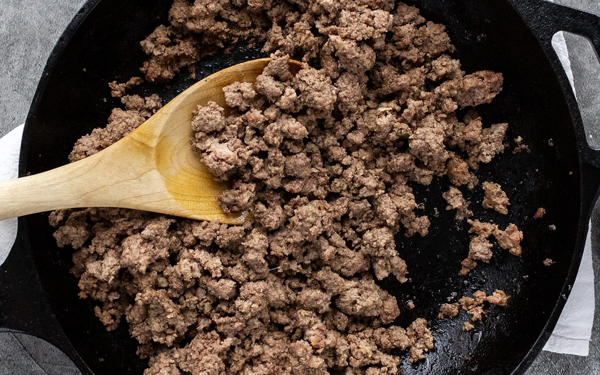

------Ingredients------
- Kirkland Organic 85/15 Ground Beef
- Salt/Pepper
------Steps------
- Take the beef out of the packaging, and chop up in a cast iron pan.
- Turn heat to high and let brown, stiring often.
- Wait until brown, then add salt and pepper, and then let simmer.
- Once done, use a slotted spoon to scoop just the beef into another bowl and enjoy!